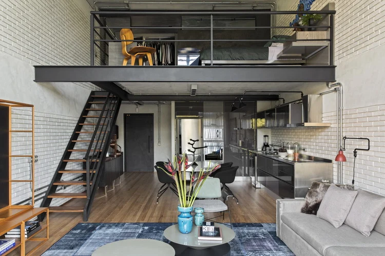
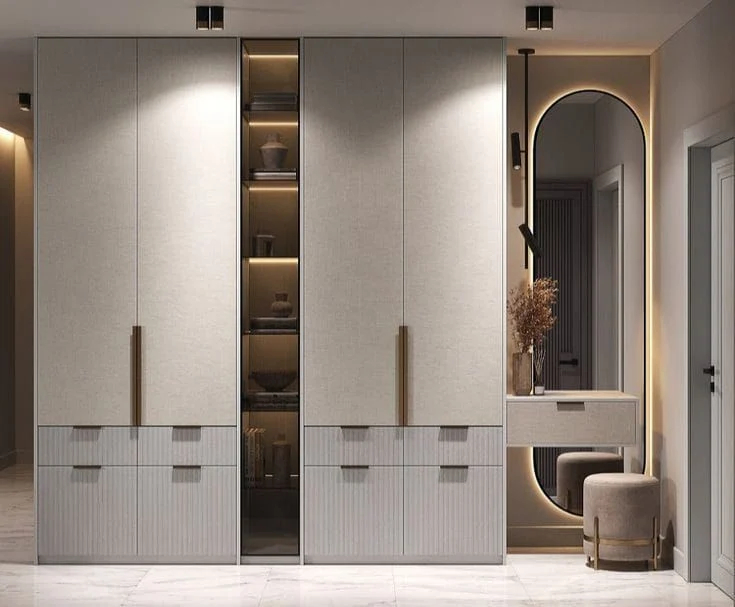
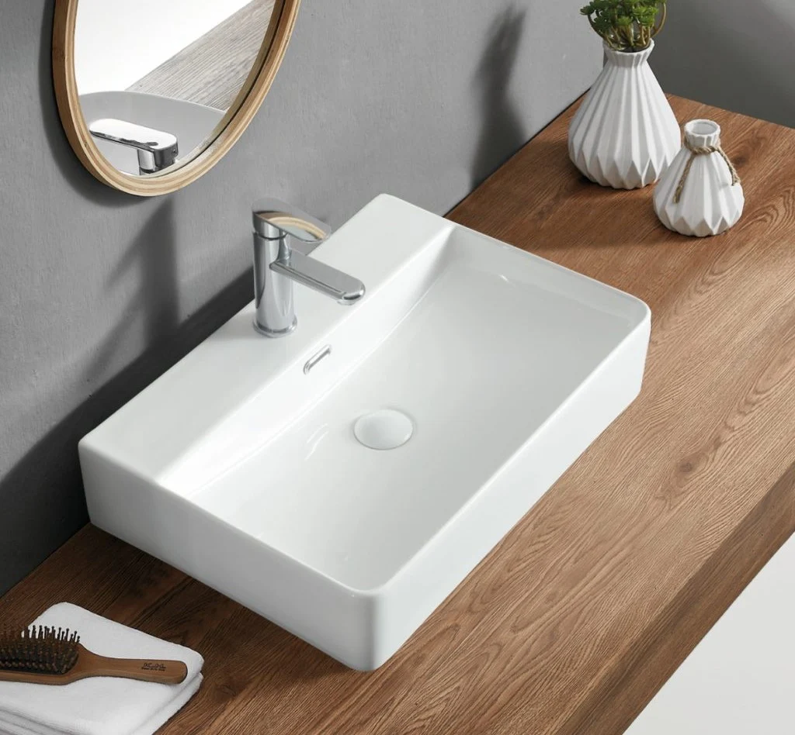
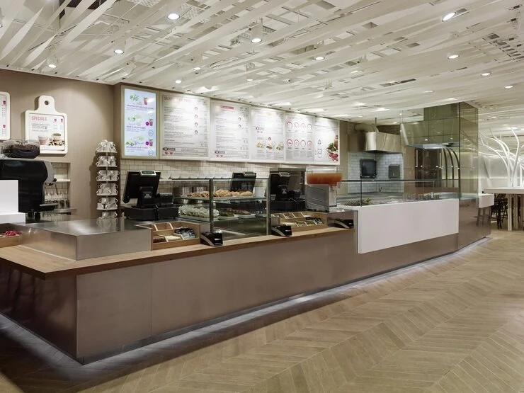
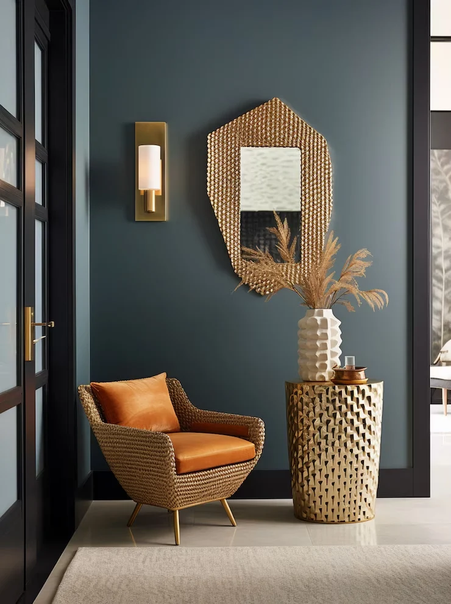
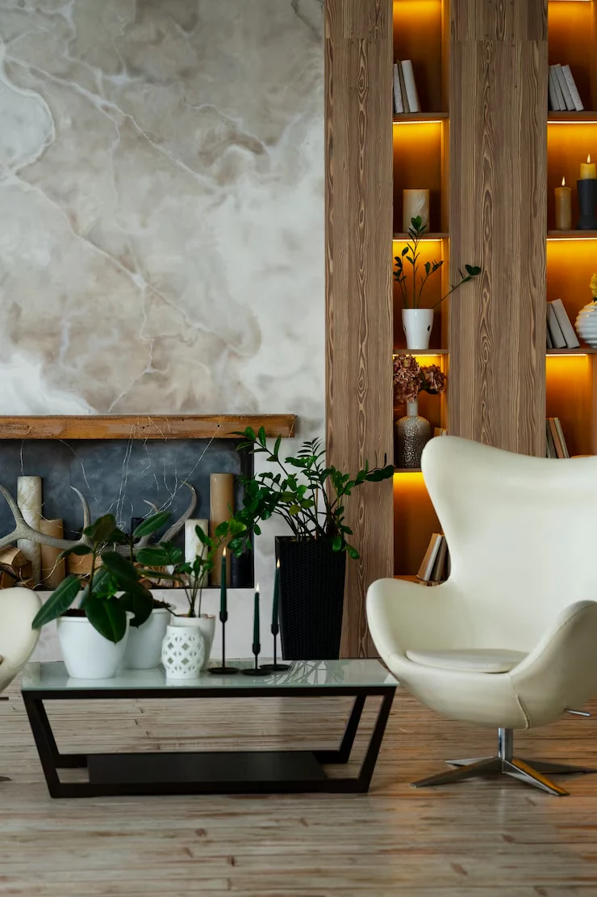
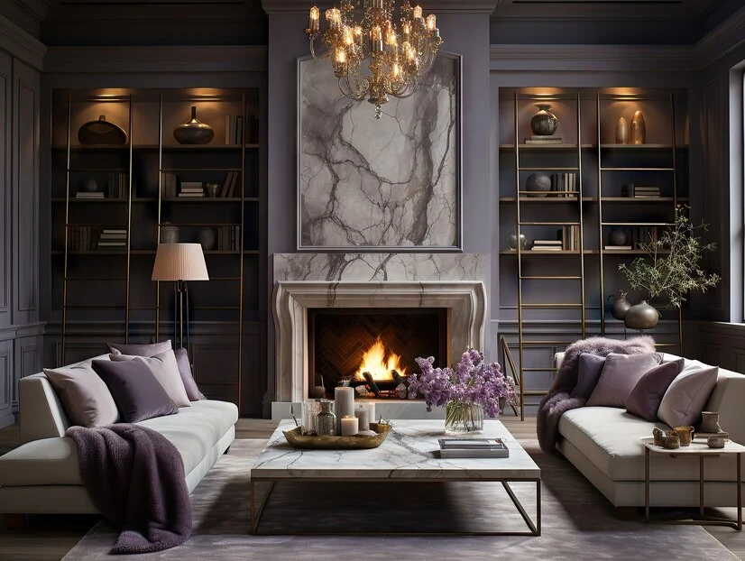
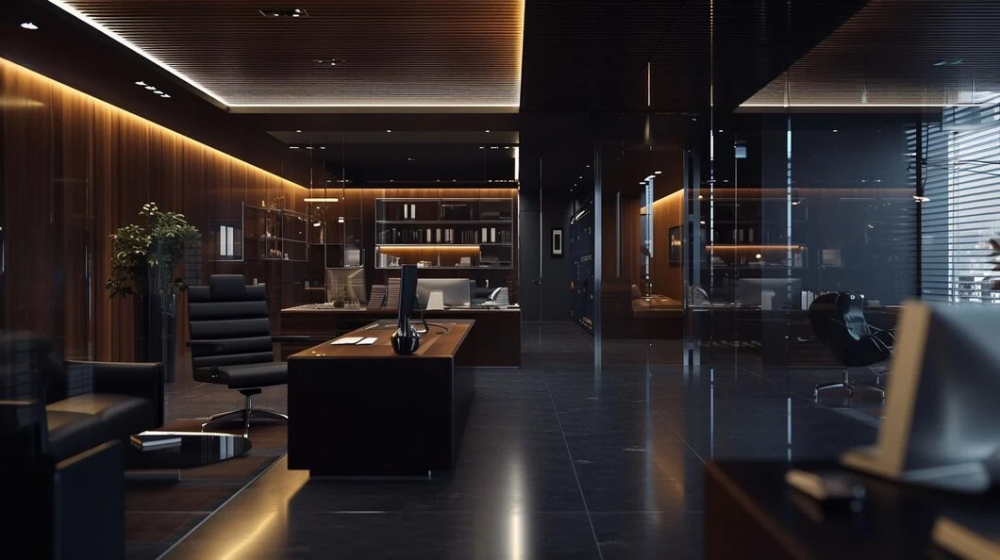
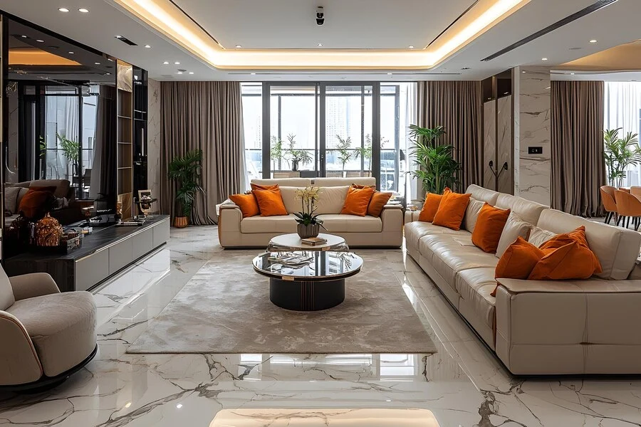
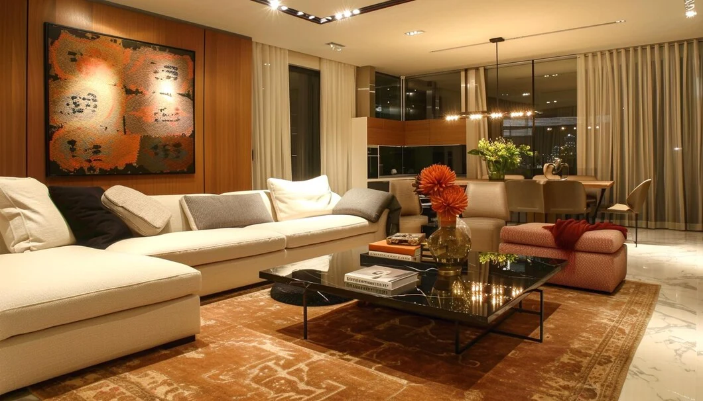

GreatSpace Interiors Studio · Turnkey premium luxury residential interior solutions. Designs are customised to your home, preferences and agreed scope.
THE JOURNAL / PLANNING / 02
How to compare two interior quotations
Compare the work before comparing the total
Two quotations are comparable only when they describe sufficiently similar work. One may include a full wardrobe with internal shelves and drawers, while another covers only its outer structure and shutters. One may include fitting work, transport and finishing at the site; another may list these separately. A lower total does not explain these differences by itself. Start by checking what each proposal actually includes.
Make a room-by-room comparison using the names in the drawings. Mark every unit or service as included, excluded or unclear. Keep a separate line for loose furniture and appliances so they do not get confused with built-in work. Where an item is unclear, ask for a written answer. Do not fill the gap with an assumption based on a display picture or a conversation you remember differently.
Ask for the specification behind a finish
Words such as premium, luxury and superior describe an impression; they do not provide a complete material specification. Ask the supplier to identify what is proposed for the main structure, visible finish and hardware, and how the specification is recorded. Where a named product is proposed, keep its approved details with the quotation. The purpose is to understand what you are buying rather than to collect technical terms.
If a substitute becomes necessary later, ask how it will be discussed and recorded. A change should describe the replacement, the reason, and any effect on appearance, price or programme. A verbal assurance that the replacement is “the same” may leave both sides with different expectations. A simple written change record protects the clarity of the original agreement.
Read the assumptions and exclusions
An interior quotation may depend on site conditions that have not yet been fully checked. Ask whether repair work, shifting existing items, electrical changes, plumbing changes and debris removal are included. Some activities may require separate specialists or building permissions. You should understand who coordinates each activity and where the studio's scope begins and ends. Do not assume that the phrase complete interiors includes every possible property issue.
Check how quantities were measured and whether they are final. If part of the quotation is provisional, ask what information is needed to settle it. Keep provisional amounts visible in the comparison. They should not disappear inside a single confident total. When a figure changes after a site visit, request an explanation connected to the actual scope or quantity change.
Understand payment and change decisions
Ask which agreed milestones trigger payments and what information you will receive at each stage. The proposal should make the amount, timing and payment route understandable. Discuss the process for approving additional work before it begins. A useful change note states what is changing, the cost difference, the schedule effect and who has accepted it. It helps avoid surprises during a busy project.
Ask how defects or unfinished items are recorded at handover and what support applies after completion. Product warranties and service commitments are not automatically the same thing. Read the actual terms for the proposed work, including exclusions and the method of raising an issue. Keep the documents together so you do not have to reconstruct the agreement later from messages.
Make the decision on the full proposal
Compare clarity, scope, practical fit and the communication process along with the price. If one quotation is substantially different, ask the supplier to explain the difference against your room list. You do not need to approve the more expensive option automatically. You need a proposal you understand and can assess against your priorities. Clear scope is the strongest starting point for that decision.
Suggested article action: Prepare your room list and discuss which items belong in the first phase of your project with GS INTERIOR STUDIO.
10 visual references
Recovered images from gsinteriorstudio.com. Used as inspiration; images repeat across articles and are not presented as verified project case studies.









